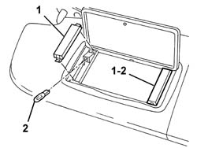

7040E21 courtesy light for sun visor mirror (1), lh or rh - r r
- Path
- Procedures > 70 FITTINGS > 7040 BODYSHELL INTERIOR TRIMS AND FITTINGS > 7040E interior courtesy light system > 7040E21 courtesy light for sun visor mirror (1), lh or rh - r r
- Kind
- repair procedure (removal / refitting; the operation number is the code)
- Applies to
- all engines; all production periods
- Interactive page
- https://sloeber94.github.io/elrnDB-a147/en/#/3025814
Applies to: all engines; all production periods
 Removing
Removing
 Refitting
Refitting1. Remove the courtesy light cover.
2. If necessary, remove the bulb (press fit).

Applies to: all engines; all production periods
Refitting
RemovingCheck that the courtesy light cover is not damaged.
If removed, refit the bulb.
Fit the courtesy light cover in its seating.
Check that the sun blind moves smoothly and the courtesy lights are working.